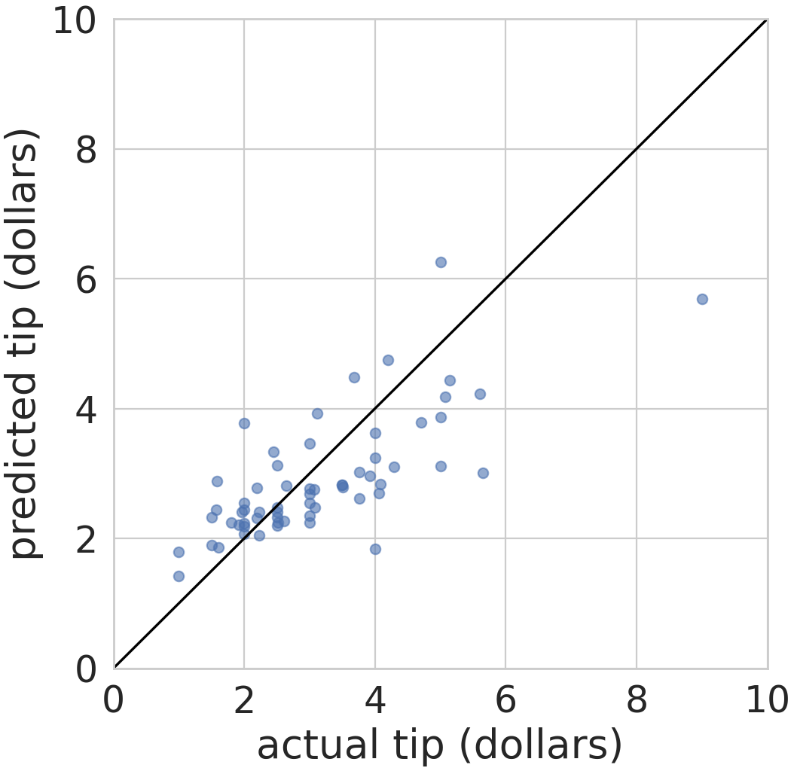
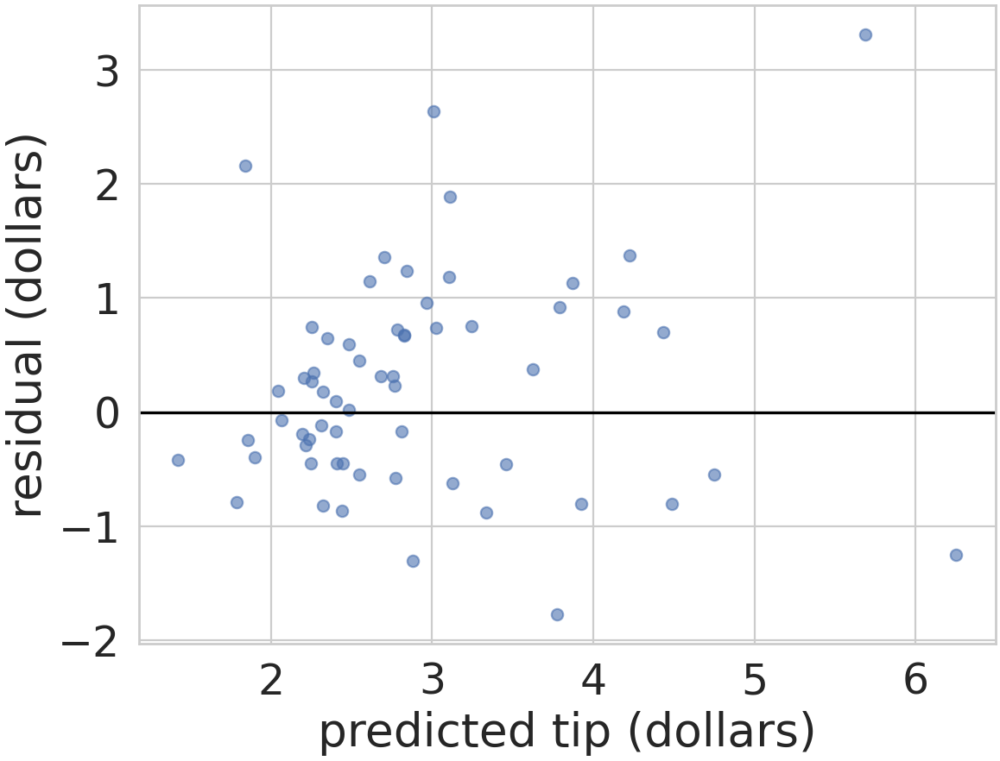
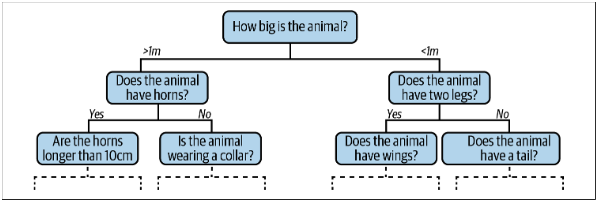
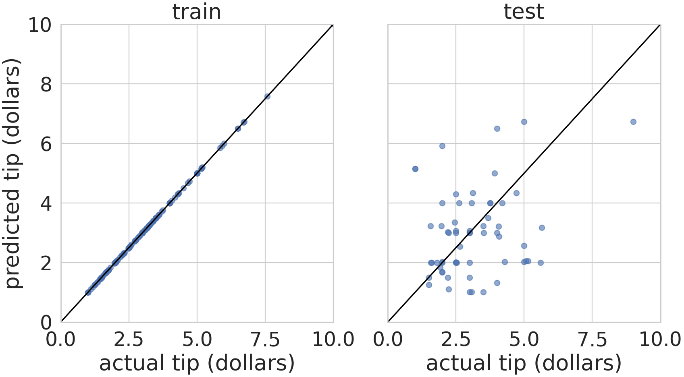
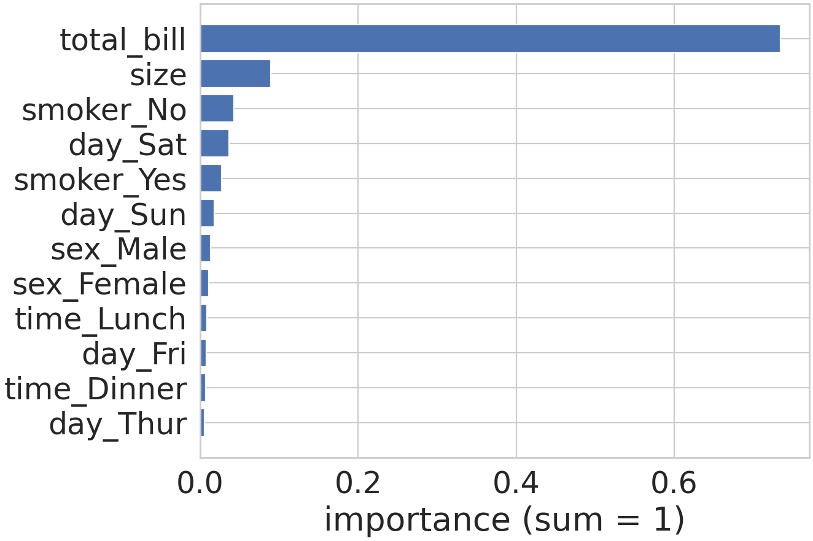
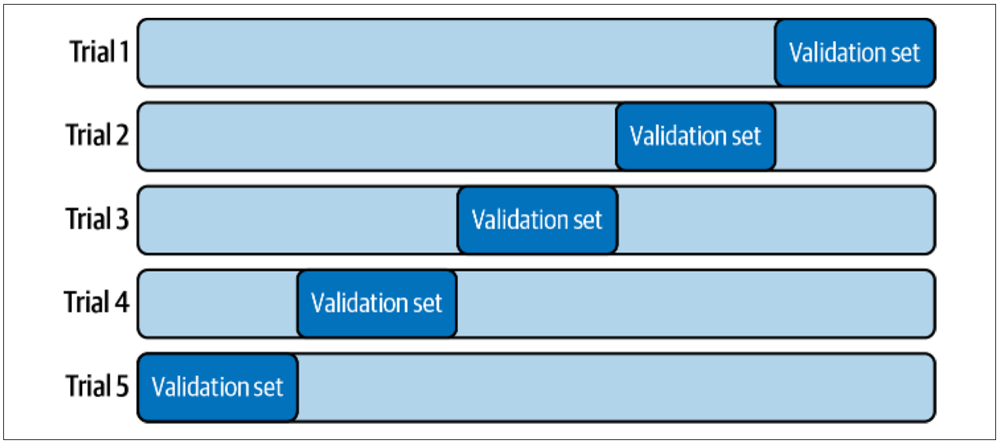
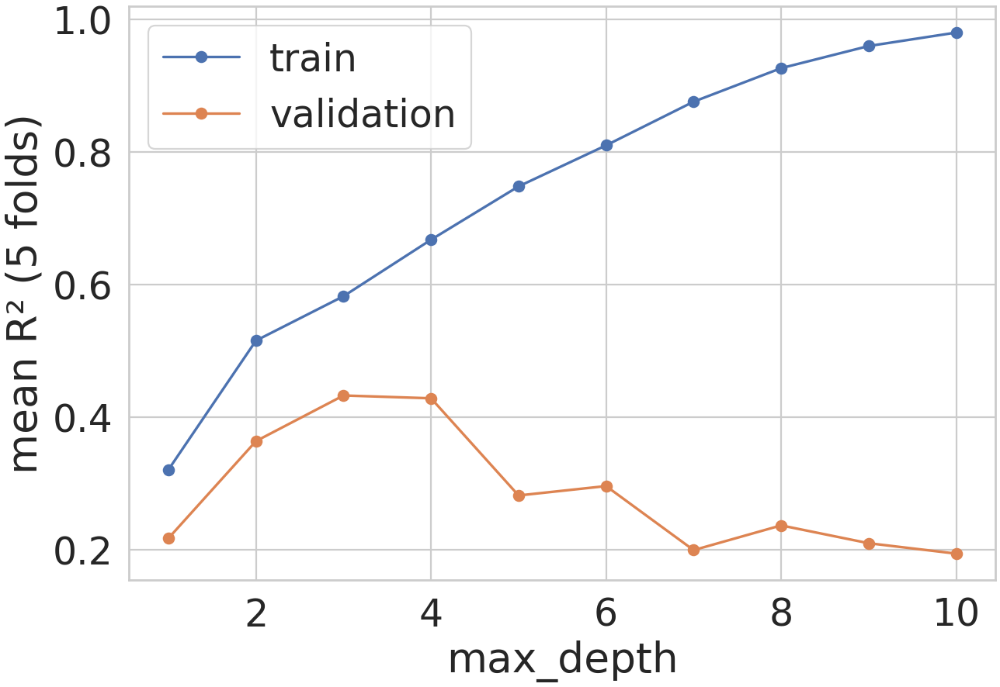

| 이미 아는 내용 | 새로 해결할 문제 | 수업 순서 |
|---|---|---|
팁 표의 범주형 열(10주차), X·y·fit·predict(11주차) | 요일 같은 문자열 열을 모델 입력 숫자로 바꾸기 | 범주형 열의 학습 실패 → 원-핫 인코딩(범주 값마다 0·1 열 하나) |
| 홀드아웃의 학습용·평가용(11주차), 산점도(6주차) | 평가용 계산마다 예측이 얼마나·어디서 틀렸는지 | 그림 1 예측값-실제값 산점도 → 그림 2 잔차(실제 − 예측) 그림 → 잔차로 계산하는 점수 R² |
선형 회귀 LinearRegression(11주차) | 다른 종류의 모델과 그 모델이 기대는 입력 | 결정 트리(질문을 이어 가며 값을 고르는 모델) → 깊이와 과대적합(학습용에만 지나치게 맞춘 상태) → 랜덤 포레스트(트리 여러 개의 평균) → 그림 3 특징 중요도 막대그래프 |
| 평가용 분할 한 번의 정확도(11주차) | 분할마다 바뀌는 점수로 모델 고르기 | 교차 검증(묶음을 돌아가며 평가) → 그림 4 검증 곡선(트리 깊이별 점수) |
데이터시각화 · 예측 모델 결과 시각화01 / 15
Outline
- 식당 계산 244건의 팁 표(10주차) → 식당 관리자가 보고서 파일(
report.md)에 첨부된 PNG 4장으로 보게 될 팁 예측 결과 그림 작성(PNG 저장은savefig(6주차), 실습에서 수행) - 팁 예측 모델: 계산 정보(총액·인원·요일 등)를 입력받아 팁 금액을 숫자로 내는 회귀 모델(11주차) · 결과 그림: 예측이 얼마나·어디서 틀리는지와 모델이 기대는 입력을 보이는 그림
- 완성 기준: 그림 4장마다 점·선·막대가 나타내는 값과 그 그림으로 말할 수 있는 범위 설명 가능
← → 이동 · Home 처음 · End 끝 · Esc 목록
데이터시각화 · 예측 모델 결과 시각화02 / 15
팁 예측 과제의 입력과 결과 그림
질문: 팁 표의 어느 열이 입력 X와 답 y가 되고, 관리자는 어떤 그림을 받는가?
10주차 팁 표: 한 행 = 식당 계산 1건(244행) · 11주차: fit(학습) → predict(예측), X = 특징, y = 타깃 · 코드: 분석 작성자의 main.py 첫 부분(import 별칭은 이전 강의와 같음)
- 회귀 질문: 계산 정보 6열(특징)로 팁
tip(달러, 연속값) 예측 · 관리자에게 보낼 그림 4장: 예측값-실제값(5장)·잔차(6장)·특징 중요도(11장)·검증 곡선(14장)
import numpy as np
import pandas as pd
import matplotlib.pyplot as plt
import seaborn as sns
from sklearn.linear_model import LinearRegression
sns.set_theme(style='whitegrid', font_scale=2)
tips = sns.load_dataset('tips')
y = tips['tip']
features = tips.drop(columns='tip')
print(features.dtypes)total_bill float64 sex category smoker category day category time category size int64 dtype: object
| 열 | 뜻 | 역할 |
|---|---|---|
tip | 팁(달러) | 타깃 y |
total_bill · size | 계산 총액(달러) · 일행 인원 | 수치형 특징 |
sex · smoker | 성별(Female·Male) · 흡연자 동석(Yes·No) | 범주형 특징 |
day · time | 요일(Thur·Fri·Sat·Sun = 목~일) · 시간대(Lunch·Dinner = 점심·저녁) | 범주형 특징 |
drop(columns='tip'):tip만 뺀 새 DataFramefeatures(244행·6열), 행 순서 유지 →y와 행끼리 짝- 출력 한 줄 =
features의 열 하나와 자료형(float64실수,int64정수,category범주형) · 마지막 줄dtype: object= 이 목록 자체의 자료형(열 아님)
- 출력: 특징 후보 6열 중 4열이
category(문자열 범주) → 숫자만 계산하는 모델에 넣기 전 변환 단계 필요(다음 장)
← → 이동 · Home 처음 · End 끝 · Esc 목록
데이터시각화 · 예측 모델 결과 시각화03 / 15
범주형 열의 학습 실패와 번호 부여의 한계
질문: 문자열 범주 열을 그대로 또는 번호로 바꿔 fit하면 무엇이 잘못되는가?
앞 장 features: total_bill·size·sex·smoker·day·time 6열(뒤 4열 category) · y: 팁 244개 · LinearRegression: 특징마다 기울기 하나를 곱해 더하는 직선 회귀 모델(11주차)
- 문제 1: 문자열 그대로 →
fit실패 · 문제 2: 요일을 번호 0~3으로 → 요일 사이에 없는 크기·간격 관계를 모델이 가정
문제 1: 문자열 열을 그대로 전달
LinearRegression().fit(features, y)ValueError: could not convert string to float: 'Female'
문제 2: 요일을 범주 번호 한 열(day_code)로 바꿔 학습
print(tips['day'].cat.categories.tolist())
day_code = pd.DataFrame({'day_code': tips['day'].cat.codes})
m_code = LinearRegression().fit(day_code, y)
four = pd.DataFrame({'day_code': [0, 1, 2, 3]})
print(m_code.predict(four).round(2))
print(y.groupby(tips['day']).mean().round(2).tolist())['Thur', 'Fri', 'Sat', 'Sun'] [2.72 2.88 3.04 3.21] [2.77, 2.73, 2.99, 3.26]
| 요일 | 번호 | 실제 평균 팁 | 번호 1열 모델의 예측 |
|---|---|---|---|
| Thur | 0 | 2.77 | 2.72 |
| Fri | 1 | 2.73 | 2.88 |
| Sat | 2 | 2.99 | 3.04 |
| Sun | 3 | 3.26 | 3.21 |
- ValueError(값 형식 오류):
fit은 숫자만 계산 → 0번 행 성별 문자열 'Female'을 실수(float)로 바꾸지 못함 cat.codes:category열의 값 목록cat.categories순서대로 매긴 번호 0~3 ·four: 번호 0~3 네 행, 열 이름을 학습 때와 같게 맞춘 예측 입력 ·groupby(...).mean(): 요일별 실제 평균 팁(5주차)- 번호 1열 → 기울기 하나 → 예측이 요일 번호마다 같은 폭(약 0.16)씩 증가 · 실제는 Fri(2.73)가 Thur(2.77)보다 낮음 → 번호 순서·간격이 만든 거짓 규칙
- 번호가 1 늘 때 팁이 같은 폭으로 변한다는 관계는 데이터에 없음 → 번호 한 열 대신 요일마다 따로 값을 정할 수 있는 입력 필요(다음 장)
← → 이동 · Home 처음 · End 끝 · Esc 목록
데이터시각화 · 예측 모델 결과 시각화04 / 15
원-핫 인코딩으로 만든 특징 행렬
질문: 범주형 열을 어떤 0·1 열로 바꾸고, 바꾼 입력에서 요일별 예측은 어떻게 달라지는가?
앞 장: 요일 번호 한 열 → 요일 번호마다 약 0.16씩 오르는 예측(실제 평균의 순서와 불일치) · tips: 팁 표 · features: 계산 정보 6열 · y: 팁
- 원-핫 인코딩(one-hot encoding): 범주 값마다 열 하나를 만들고 그 행의 범주 열만 1, 나머지 0 · 특징 공학(feature engineering): 원래 정보를 모델이 계산할 수 있는 숫자 열로 바꾸는 작업, 원-핫 인코딩은 그 한 방법
day_hot = pd.get_dummies(tips['day'], prefix='day', dtype=int)
print(day_hot.loc[[77, 90, 19, 0]])
m_hot = LinearRegression().fit(day_hot, y)
print(m_hot.predict(day_hot.loc[[77, 90, 19, 0]]).round(2))
X = pd.get_dummies(features, dtype=int)
print(X.shape)
print(X.columns.tolist())day_Thur day_Fri day_Sat day_Sun 77 1 0 0 0 90 0 1 0 0 19 0 0 1 0 0 0 0 0 1 [2.77 2.73 2.99 3.26] (244, 12) ['total_bill', 'size', 'sex_Male', 'sex_Female', 'smoker_Yes', 'smoker_No', 'day_Thur', 'day_Fri', 'day_Sat', 'day_Sun', 'time_Lunch', 'time_Dinner']
요일 한 열 → 요일 4열
pd.get_dummies: pandas의 원-핫 인코딩 함수 ·prefix='day'→ 열 이름day_값·dtype=int→ True/False 대신 1/0 표시- 77·90·19·0행 = Thur·Fri·Sat·Sun이 처음 나오는 행 → 행마다 1이 정확히 한 칸
- 요일 열마다 별도 기울기 → 예측 = 요일별 실제 평균(앞 장 2.77·2.73·2.99·3.26) 그대로, 번호 간격 가정 없음
전체 특징 행렬 X
- 수치 2열(
total_bill·size) 그대로 + 범주 4열 → 성별 2·흡연 2·요일 4·시간대 2 = 10열 → 합계 12열 X: (244, 12) = (표본 수, 특징 수), 행 순서 유지 →y와 계산마다 짝 보존
- 원-핫 인코딩 = 범주 값 하나당 0·1 열 하나 · 비용: 범주 수만큼 열 증가(요일 1열 → 4열)
← → 이동 · Home 처음 · End 끝 · Esc 목록
데이터시각화 · 예측 모델 결과 시각화05 / 15
예측값-실제값 비교 산점도
질문: 학습에 쓰지 않은 계산 61건의 팁을 선형 회귀가 얼마나 가깝게 예측했는지 한 그림으로 어떻게 보이는가?
앞 장 X: 원-핫 인코딩한 특징 행렬 (244, 12) · y: 팁 · 11주차 홀드아웃: 일부 행을 학습에서 빼 두고 평가에만 쓰는 방법(train_test_split)
- 예측값-실제값 산점도: 평가용 계산 1건 = 점 1개(가로 실제 팁, 세로 예측 팁) · 기준선 y = x(예측 = 실제)에서 세로 거리 = 틀린 크기
from sklearn.model_selection import train_test_split
X_train, X_test, y_train, y_test = train_test_split(
X, y, train_size=0.75, random_state=0)
lin = LinearRegression().fit(X_train, y_train)
pred = lin.predict(X_test)
comp = pd.DataFrame({'tip': y_test, 'pred': pred})
print(comp.head(2).round(2))
fig, ax = plt.subplots(figsize=(7, 7))
ax.scatter(y_test, pred, alpha=0.6)
ax.plot([0, 10], [0, 10], color='black')
ax.set(xlim=(0, 10), ylim=(0, 10),
xlabel='actual tip (dollars)',
ylabel='predicted tip (dollars)')tip pred 64 2.64 2.81 63 3.76 3.02
train_size=0.75 → 244행 중 183행 학습용, 나머지 61행 평가용 · 출력: 평가용 첫 2건의 행 번호·실제 tip·예측 pred(comp 표) · 점 = 평가용 계산 1건(alpha=0.6 반투명), 검은 선 = (0, 0)·(10, 10)을 이은 y = x(두 축 0~10 → 45도)
- 읽기: 선 위쪽 점 = 실제보다 많게 예측, 아래쪽 = 적게 예측 · 64번 계산 실제 2.64 → 예측 2.81(선 위) · 실제 5달러 이상 점 대부분 선 아래 → 이 분할(
random_state=0)의 평가용 61건에서 큰 팁을 적게 예측(건수·크기는 다음 장 잔차로 확인)
← → 이동 · Home 처음 · End 끝 · Esc 목록
데이터시각화 · 예측 모델 결과 시각화06 / 15
잔차와 잔차 그림
질문: 평가용 계산마다 예측이 얼마나 빗나갔고, 빗나간 크기는 예측값에 따라 어떻게 달라지는가?
앞 장 pred: 선형 회귀 lin이 낸 평가용 61건의 예측 팁 · y_test: 같은 61건의 실제 팁 · 64번 계산: 실제 2.64, 예측 2.81
- 잔차(residual) = 실제값 − 예측값, 계산 한 건마다 하나 · 양수 = 적게 예측, 음수 = 많게 예측, 0 = 정확
resid = y_test - pred
print(resid.head(3).round(2).tolist())
print(round(resid.min(), 2), round(resid.max(), 2))
big = y_test >= 5
print(big.sum(), (resid[big] > 0).sum())
low = pred < 3
print(low.sum(), round(resid[low].std(), 2),
round(resid[~low].std(), 2))
fig, ax = plt.subplots(figsize=(8, 6))
ax.scatter(pred, resid, alpha=0.6)
ax.axhline(0, color='black')
ax.set(xlabel='predicted tip (dollars)',
ylabel='residual (dollars)')[-0.17, 0.74, 0.73] -1.77 3.31 8 7 41 0.69 1.32
ax.axhline(0)(세로값 0 위치 가로선) = 잔차 0(정확한 예측) 기준
- 1행 첫 값 −0.17 = 64번 계산 2.64 − 2.81 · 2행 최솟값·최댓값(3.31 = 가장 크게 적게 예측)
- 3행:
big= 실제 5달러 이상 불리언 마스크, 8건 중 7건 잔차 양수(앞 장 그림의 선 아래) - 4행:
low= 예측 3달러 미만 마스크 41건(~low= 나머지 20건) ·std()= 표준편차(값이 평균에서 흩어진 정도) 0.69·1.32
- 점이 0 선 주변에 폭이 일정하게 퍼지면 예측값에 상관없이 오차 크기가 비슷함 · 이 그림: 오른쪽(큰 예측)일수록 넓게 퍼짐, 잔차 표준편차 0.69 → 1.32(약 2배) → 보고서에 '예측 3달러 이상은 오차 폭이 큼' 범위 명시
← → 이동 · Home 처음 · End 끝 · Esc 목록
데이터시각화 · 예측 모델 결과 시각화07 / 15
잔차 제곱합으로 계산하는 결정계수 R²
질문: 잔차 61개를 점수 하나로 요약하면 몇 점이고, 그 점수는 무엇과 비교한 값인가?
앞 장 resid: 평가용 61건의 잔차(실제 − 예측) · y_test: 같은 61건의 실제 팁 · lin: 학습용 183건으로 학습한 선형 회귀
- 결정계수 R²(coefficient of determination): 모든 계산을 실제 팁의 평균 하나로 예측할 때의 제곱 오차 합에 비해 모델이 줄인 비율 · R² = 1 − 잔차 제곱합 ÷ 평균 예측 제곱합
sse = (resid ** 2).sum()
sst = ((y_test - y_test.mean()) ** 2).sum()
print(round(y_test.mean(), 2), round(sse, 2), round(sst, 2))
print(round(1 - sse / sst, 3))
print(round(lin.score(X_test, y_test), 3))3.13 56.64 116.95 0.516 0.516
sse= 잔차 제곱합,sst= 평균 예측 제곱합(모든 계산을 평균 3.13으로 예측했을 때의 잔차 제곱합) ·**= 거듭제곱lin.score(X_test, y_test): 회귀 모델이 평가용 입력으로 예측한 뒤 R²를 계산하는 메서드 → 직접 계산과 같은 0.516
| 값 | 계산(평가용 61건) | 결과 |
|---|---|---|
| 평균 예측 제곱합 | (실제 − 평균 3.13)²의 합 | 116.95 |
| 잔차 제곱합 | (실제 − 예측)²의 합 | 56.64 |
| R² | 1 − 56.64 ÷ 116.95 | 0.516 |
- 제곱하는 이유: 양수·음수 잔차가 서로 지워지지 않게, 큰 잔차에 더 큰 무게
- 읽는 법: 1 = 모든 예측이 정확, 0 = 평균 하나로 예측한 것과 같음, 음수 = 평균 하나보다 나쁨
- 평가용 R² 0.516 = 평균 하나로 예측할 때의 제곱 오차를 약 52% 줄임 · 분할 한 번(
random_state=0)의 평가용 61건에서 잰 값, 분할을 바꾸면 달라짐(12장)
← → 이동 · Home 처음 · End 끝 · Esc 목록
데이터시각화 · 예측 모델 결과 시각화08 / 15
결정 트리 회귀의 분할 규칙
질문: 결정 트리는 어떤 질문을 이어 가며 계산 한 건의 팁 예측값을 정하는가?
단계 전환: 5~7장 선형 회귀(특징마다 기울기를 곱해 더한 값)의 결과 그림·R² 완료 → 지금부터 다른 종류의 모델, 같은 학습용 X_train(183행, 특징 12열)·y_train으로 학습
- 결정 트리(decision tree): 질문으로 행을 두 묶음씩 나누기를 반복, 마지막 묶음(잎)의 학습용 팁 평균을 예측값으로 냄
from sklearn.tree import DecisionTreeRegressor, export_text
tree2 = DecisionTreeRegressor(max_depth=2, random_state=0)
tree2.fit(X_train, y_train)
print(export_text(tree2, feature_names=list(X.columns)))
leaf = y_train[X_train['total_bill'] <= 13.14]
print(len(leaf), round(leaf.mean(), 2))|--- total_bill <= 20.49 | |--- total_bill <= 13.14 | | |--- value: [1.85] | |--- total_bill > 13.14 | | |--- value: [2.72] |--- total_bill > 20.49 | |--- total_bill <= 46.81 | | |--- value: [3.73] | |--- total_bill > 46.81 | | |--- value: [8.37] 44 1.85

- 그림 읽기: 맨 위 상자 = 첫 질문(동물 크기), >1m·<1m·Yes·No = 답별 갈래, 점선 = 이후 질문 생략
- 트리의 질문 = 특징 하나와 기준값 비교 · 기준값: 나눈 두 묶음 안의 (팁 − 묶음 평균)² 합이 가장 작아지는 값 ·
max_depth=2: 질문 최대 2번(잎 최대 4개) DecisionTreeRegressor: 회귀용 결정 트리 클래스 ·export_text:|---한 단계 = 질문 한 번 깊이,value= 잎의 예측값 ·random_state=0: 분할 후보를 살피는 무작위 순서 고정
- 검산:
total_bill≤ 13.14인 학습용 44건 평균 1.85 = 첫 잎value· 예측 예:total_bill17.59 → 20.49 이하 → 13.14 초과 → 2.72
← → 이동 · Home 처음 · End 끝 · Esc 목록
데이터시각화 · 예측 모델 결과 시각화09 / 15
트리 깊이와 과대적합
질문: 깊이 제한 없이 키운 트리는 학습용과 평가용에서 각각 얼마나 맞히는가?
앞 장 tree2: max_depth=2 결정 트리(잎 4개) · X_train·y_train: 학습용 183건 · X_test·y_test: 평가용 61건 · score: R²(7장)
max_depth생략(기본값 None = 제한 없음): 잎마다 학습용 팁 값이 하나로 같아질 때까지 계속 분할 · 과대적합(overfitting): 학습용 데이터의 우연한 차이까지 외워 학습용 점수는 높고 처음 보는 데이터의 점수는 낮은 상태
deep = DecisionTreeRegressor(random_state=0)
deep.fit(X_train, y_train)
for t in [tree2, deep]:
print(t.get_depth(), t.get_n_leaves(),
round(t.score(X_train, y_train), 3),
round(t.score(X_test, y_test), 3))
fig, axes = plt.subplots(1, 2, figsize=(12, 6), sharey=True)
axes[0].scatter(y_train, deep.predict(X_train), alpha=0.6)
axes[1].scatter(y_test, deep.predict(X_test), alpha=0.6)
for ax, name in zip(axes, ['train', 'test']):
ax.plot([0, 10], [0, 10], color='black')
ax.set(title=name, xlim=(0, 10), ylim=(0, 10),
xlabel='actual tip (dollars)')
axes[0].set(ylabel='predicted tip (dollars)')2 4 0.454 0.553 13 166 1.0 -0.482
train = 학습용 183건, 오른쪽 test = 평가용 61건
- 출력 한 줄 = 트리 하나: 깊이(
get_depth())·잎 수(get_n_leaves())·학습용 R²·평가용 R² · 1행tree2: 2·4·0.454·0.553 · 2행deep: 13·166·1.0·−0.482 - 학습용 183건을 잎 166개로 나눔 → 잎 하나당 평균 약 1.1건 = 학습용 팁을 거의 한 건씩 외움
- 과대적합 판정: 학습용 R² 1.0(모든 점이 선 위) ≫ 평가용 R² −0.482(평균 하나보다 나쁨) · 깊이 2 트리는 이 분할에서 평가용이 오히려 높음(0.553 > 0.454) → 깊이 = 모델의 복잡도를 정하는 하이퍼파라미터(11주차), 알맞은 값은 14장에서 결정
← → 이동 · Home 처음 · End 끝 · Esc 목록
데이터시각화 · 예측 모델 결과 시각화10 / 15
랜덤 포레스트: 트리 100개 예측의 평균
질문: 과대적합한 깊은 트리 100개의 예측을 평균하면 평가용 R²는 개별 트리보다 좋아지는가?
앞 장 deep: 깊이 제한 없는 트리, 학습용 R² 1.0·평가용 R² −0.482(과대적합) · X_test·y_test: 평가용 61건 · 64번 계산(평가용 첫 행): 실제 팁 2.64
- 랜덤 포레스트(random forest): 학습용 183행에서 복원 추출(뽑은 행을 다시 넣고 뽑기, 같은 행 중복 가능)한 183행 표마다 깊이 제한 없는 트리 1개 학습 → 예측 = 모든 트리 예측의 평균
from sklearn.ensemble import RandomForestRegressor
from sklearn.metrics import r2_score
forest = RandomForestRegressor(n_estimators=100,
random_state=0)
forest.fit(X_train, y_train)
Xt = X_test.to_numpy()
each = np.array([t.predict(Xt) for t in forest.estimators_])
print(each.shape)
print(each[:3, 0].round(2), round(each[:, 0].mean(), 3),
round(forest.predict(X_test)[0], 3))
scores = [r2_score(y_test, p) for p in each]
print(round(min(scores), 3), round(max(scores), 3),
round(forest.score(X_test, y_test), 3))(100, 61) [2.34 3.27 2.34] 2.794 2.794 -0.635 0.449 0.483
RandomForestRegressor: 회귀용 랜덤 포레스트 클래스,n_estimators= 트리 개수 ·estimators_: 학습된 트리 100개 목록 ·to_numpy():X_test를 열 이름 없는 NumPy 배열Xt로 변환(개별 트리는 열 이름 없이 학습되어 DataFrame을 넣으면 경고) ·each: 행 = 트리 100개, 열 = 평가용 61건인 예측 배열- 출력 2행(64번 계산): 트리마다 2.34·3.27·2.34 …로 다름, 100개 평균 2.794 =
forest.predict결과 2.794 → 트리 결과를 합치는 규칙 = 단순 평균 - 출력 3행:
r2_score(실제, 예측)=score와 같은 R² 함수 · 개별 트리 100개의 평가용 R² −0.635~0.449, 이 분할에서 포레스트 0.483 > 가장 좋은 개별 트리
- 트리마다 다른 복원 추출 표 → 서로 다른 계산에서 틀림 → 평균에서 오차 일부 상쇄 · 평가용 R²: 깊은 트리 1개 −0.482(9장) → 포레스트 0.483, 단 이 분할에서는 깊이 2 트리 0.553·선형 회귀 0.516보다 낮음(어느 모델이 나은지는 12~13장)
← → 이동 · Home 처음 · End 끝 · Esc 목록
데이터시각화 · 예측 모델 결과 시각화11 / 15
특징 중요도 막대그래프
질문: 포레스트의 예측은 특징 12열 중 어느 열에 가장 많이 기대고, 막대그래프로 어떻게 보이는가?
앞 장 forest: 학습용 183건의 트리 100개 포레스트 · X.columns: 특징 12열 이름(4장) · 분할 기준: 묶음 안 (팁 − 묶음 평균)² 합 최소(8장)
- 특징 중요도(feature importance): 트리마다 분할로 줄어든 학습용 제곱 오차를 그 분할에 쓴 특징별로 더해 합 1의 비율로 바꾸고, 트리 100개에서 평균한 값 · 속성
feature_importances_(이름 끝 밑줄 = 학습으로 정해진 값, 11주차)
imp = pd.Series(forest.feature_importances_, index=X.columns)
imp = imp.sort_values()
print(imp.tail(3).round(3))
day_cols = ['day_Thur', 'day_Fri', 'day_Sat', 'day_Sun']
print(round(imp.sum(), 3), round(imp[day_cols].sum(), 3))
fig, ax = plt.subplots(figsize=(8, 6))
ax.barh(imp.index, imp.values)
ax.set(xlabel='importance (sum = 1)')smoker_No 0.043 size 0.089 total_bill 0.734 dtype: float64 1.0 0.067
sort_values(): 값 오름차순 정렬 ·tail(3): 마지막 3개 = 가장 큰 3개 · 출력 마지막 행: 12열 합 1.0, 요일 4열 합 0.067

ax.barh(이름, 길이): 가로 막대, 첫 항목이 맨 아래 → 오름차순이라 가장 긴 막대가 맨 위 ·imp.values: 중요도 값 배열
- 그림 3: 계산 총액
total_bill0.734 > 인원size0.089 > 나머지 · 요일 몫 = 막대 4개 합 0.067(원-핫 인코딩으로 나뉨) - 말할 수 있는 범위: 학습용 데이터에서 예측에 쓰인 정도 · 팁을 늘리는지 줄이는지(방향)와 원인은 이 막대로 판단 불가
← → 이동 · Home 처음 · End 끝 · Esc 목록
데이터시각화 · 예측 모델 결과 시각화12 / 15
평가용 분할에 따라 달라지는 R²
질문: 학습용·평가용을 다르게 나누면 네 모델의 평가용 R²와 순위는 그대로인가?
단계 전환: 5~11장 결과 그림 완료(모든 점수가 random_state=0 분할 하나의 평가용 61건 기준) → 지금부터 보고할 모델 고르기 · random_state: 행을 섞는 순서의 시작 번호(11주차), 바꾸면 평가용 61건의 구성이 바뀜
- 네 모델: 선형 회귀(5장)·깊이 2 트리(8장)·깊이 제한 없는 트리(9장)·포레스트(10장), 분할 0~3번마다 다시 학습·평가
models = {'LinearRegression': lin,
'tree max_depth=2': tree2,
'tree max_depth=None': deep,
'forest 100 trees': forest}
for name, m in models.items():
r2 = []
for rs in range(4):
X_tr, X_te, y_tr, y_te = train_test_split(
X, y, train_size=0.75, random_state=rs)
m.fit(X_tr, y_tr)
r2.append(round(m.score(X_te, y_te), 3))
print(name, r2)LinearRegression [0.516, 0.457, 0.502, 0.507] tree max_depth=2 [0.553, 0.493, 0.547, 0.441] tree max_depth=None [-0.482, 0.473, -0.103, 0.035] forest 100 trees [0.483, 0.521, 0.609, 0.491]
models: 이름 문자열 → 앞 장들의 모델 객체(lin·tree2·deep·forest)를 짝지은 사전(dict) ·items(): 이름·객체 쌍을 하나씩 꺼내는 반복 ·append: 목록 끝에 값 추가m.fit다시 실행: 앞 장의 학습 결과를 분할마다 새 학습 결과로 덮어씀(설정은 그대로) ·m.score: 그 분할 평가용의 R²- 출력 한 줄 = 모델 하나, 목록 4칸 =
random_state0·1·2·3 분할의 평가용 R² · 첫 칸이 5·9·10장 값(0.516·0.553·−0.482·0.483)
random_state | 평가용 R² 1위 |
|---|---|
| 0 | 깊이 2 트리 0.553 |
| 1 · 2 | 포레스트 0.521 · 0.609 |
| 3 | 선형 회귀 0.507 |
- 분할만 바꿔도 1위가 세 모델로 갈림(두 번 바뀜) · 깊이 제한 없는 트리는 분할에 따라 큰 차이(−0.482~0.473) → 평가용 61건 한 번의 R²로 모델 순위 결정 불가, 모든 행을 한 번씩 평가에 쓰고 점수를 평균하는 방법 필요(다음 장)
← → 이동 · Home 처음 · End 끝 · Esc 목록
데이터시각화 · 예측 모델 결과 시각화13 / 15
5겹 교차 검증으로 비교한 평균 R²
질문: 244건을 5묶음으로 나눠 돌아가며 평가하면 네 모델의 평균 R²와 순위는 어떻게 되는가?
앞 장 models: 선형 회귀·깊이 2 트리·깊이 제한 없는 트리·포레스트 네 모델의 사전 · 분할 한 번의 평가용 R²는 분할마다 1위가 바뀜 · X (244, 12)·y
- 교차 검증(cross-validation): 데이터를 k개 묶음으로 나눠, 한 묶음은 평가에 쓰고 나머지로 학습하는 일을 묶음마다 돌아가며 k번 반복해 점수 k개를 평균 · 5겹 = k = 5 · 검증 묶음 = 그 회차에서 평가에 쓰는 묶음

- 이 데이터: 244행을 저장 순서 그대로(섞지 않음) 49·49·49·49·48행 5묶음 → 계산마다 정확히 한 번 검증 묶음에 들어감 · 1회차 검증 묶음 = 첫 49행(그림과 위치 순서만 다름)
from sklearn.model_selection import cross_val_score
for name, m in models.items():
s = cross_val_score(m, X, y, cv=5)
print(name, s.round(2), round(s.mean(), 3))LinearRegression [0.53 0.59 0.41 0.2 0.38] 0.421 tree max_depth=2 [0.3 0.43 0.39 0.25 0.45] 0.363 tree max_depth=None [-0.01 0.1 0.43 0.01 0.17] 0.141 forest 100 trees [0.36 0.53 0.5 0.18 0.34] 0.38
cross_val_score(모델, X, y, cv=5): 회차마다 모델의 학습 전 복사본을 나머지 4묶음으로 학습해 검증 묶음 R²를 계산, 5개 배열 반환 · 출력 한 줄 = 모델 하나: 회차별 R² 5개, 평균- 평균 순위: 선형 회귀 0.421 > 포레스트 0.380 > 깊이 2 트리 0.363 > 깊이 제한 없는 트리 0.141 · 같은 모델의 회차별 R² 폭도 큼(선형 회귀 0.2~0.59)
- 모델 고르기 = 244건 모두 한 번씩 평가에 쓴 5겹 평균 R² 기준 · 깊이 제한 없는 트리(9장에서 과대적합 확인)는 분할 한 번(12장)과 교차 검증 모두에서 최하위 · 트리 깊이를 2·제한 없음 사이 값으로 바꾸면 순위가 달라지는지 다음 장에서 확인
← → 이동 · Home 처음 · End 끝 · Esc 목록
데이터시각화 · 예측 모델 결과 시각화14 / 15
검증 곡선으로 고르는 트리 깊이
질문: 트리 깊이 1~10마다 학습용·검증 R²를 그리면 어느 깊이를 고르고, 그 트리가 선형 회귀보다 나은가?
13장 결론: 5겹 평균 R² 선형 회귀 0.421 1위, 트리는 깊이 2(0.363)·제한 없음(0.141, 9장 과대적합) 두 값만 확인 → 그 사이 깊이 1~10을 같은 5겹 교차 검증(cv=5)으로 비교
- 검증 곡선(validation curve): 하이퍼파라미터(학습 전 사람이 정하는 설정값, 11주차; 여기서는
max_depth) 값마다 교차 검증의 학습용·검증 R² 평균을 이은 두 선 · 과소적합(underfitting): 너무 단순해 학습용 점수도 낮은 상태
from sklearn.model_selection import validation_curve
depths = range(1, 11)
train_r2, val_r2 = validation_curve(
DecisionTreeRegressor(random_state=0), X, y,
param_name='max_depth', param_range=depths, cv=5)
train_mean = train_r2.mean(axis=1)
val_mean = val_r2.mean(axis=1)
print(train_mean.round(3))
print(val_mean.round(3))
fig, ax = plt.subplots(figsize=(9, 6))
ax.plot(depths, train_mean, marker='o', label='train')
ax.plot(depths, val_mean, marker='o', label='validation')
ax.set(xlabel='max_depth', ylabel='mean R² (5 folds)')
ax.legend()[0.32 0.515 0.582 0.667 0.748 0.809 0.875 0.926 0.959 0.98 ] [0.217 0.363 0.432 0.428 0.281 0.295 0.199 0.236 0.209 0.194]
train = 학습에 쓴 4묶음, validation = 검증 묶음, 두 선 간격 = 과대적합 정도
validation_curve:X(원-핫 특징 244×12)·y(tip)로param_range깊이마다 5겹 교차 검증 → 행 = 깊이 10개, 열 = 회차 5개인 점수 배열 2개 ·mean(axis=1)= 회차 평균(3주차 axis)- 깊이 1~2: 두 선 모두 낮음 = 과소적합 · 3·4: 검증 최고 구간(0.432·0.428) · 5 이상: 학습용 상승, 검증 0.3 이하 = 과대적합
- 결론: 최고 구간 중 더 단순한
max_depth=3· 선형 회귀 0.421(13장)과 차이 0.011인데, 13장 선형 회귀의 5회차 R²가 0.2~0.59로 회차마다 크게 흔들림 → 0.011은 묶음 구성에 따라 뒤집힐 수 있는 크기, 우열 불가 → 보고 모델은 그림 1·2(5·6장)의 선형 회귀 유지
← → 이동 · Home 처음 · End 끝 · Esc 목록
데이터시각화 · 예측 모델 결과 시각화15 / 15
Summary
- 작업 순서: 원-핫 인코딩(범주 값마다 0·1 열)한 X (244, 12) → 학습용 183·평가용 61 → 선형 회귀 → 그림 1·2와 R² → 결정 트리(질문으로 나눈 잎의 학습용 평균, 깊을수록 과대적합)·랜덤 포레스트(복원 추출 표로 학습한 트리 100개의 평균) → 그림 3 → 5겹 교차 검증 → 그림 4
| 그림(장) | 점·선·막대의 뜻 | 이 데이터의 결과 | 말할 수 있는 범위 |
|---|---|---|---|
| 1 예측값-실제값(5장, 선형 회귀) | 가로 = 실제 팁, 세로 = 예측 팁, 점 = 평가용 계산 1건, 검은 선 = y = x | 실제 5달러 이상 8건 중 7건 선 아래(적게 예측) | random_state=0 분할의 평가용 61건 |
| 2 잔차(6장, 선형 회귀) | 가로 = 예측 팁, 세로 = 실제 − 예측, 가로선 = 잔차 0 | 잔차 표준편차: 예측 3달러 미만 41건 0.69, 이상 20건 1.32 | 같은 61건에서 예측 3달러 이상 구간의 오차 폭이 큼 |
| 3 특징 중요도(11장, 포레스트) | 막대 = 포레스트 분할의 제곱 오차 감소 비율(합 1) | total_bill 0.734, 요일 4열 합 0.067 | 포레스트 기준(선형 회귀와 다를 수 있음), 방향·원인 아님 |
| 4 검증 곡선(14장, 결정 트리) | 두 선 = 깊이별 5겹 평균 학습용·검증 R² | 검증 최고 깊이 3·4(0.432·0.428), 5 이상 과대적합 | 트리 깊이 선택 → max_depth=3 |
- 점수: R² = 1 − 잔차 제곱합 ÷ 평균 예측 제곱합(모든 계산을 평균 팁으로 예측했을 때의 잔차 제곱합, 7장
sst) · 모델 고르기는 분할 한 번이 아닌 5겹 교차 검증 평균 R² - 보고 모델: 5겹 평균 R² 선형 회귀 0.421(13장)과 깊이 3 트리 0.432(14장)의 차이 0.011, 선형 회귀의 5회차 R²가 0.2~0.59로 흔들림 → 우열이 없어 그림 1·2의 선형 회귀 유지, report.md에는 그림마다 괄호 안의 모델 이름 표기
- 전달: 5·6·11·14장
fig를savefig(6주차)로 PNG 저장 → 관리자는report.md에 첨부된 그림 4장으로 확인
← → 이동 · Home 처음 · End 끝 · Esc 목록